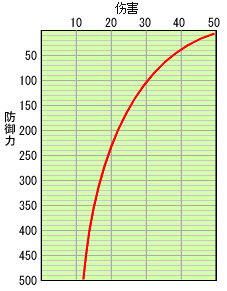

プレイヤーが怪物からの攻击を受けた際のダメージについて示します。
| ● ダメージ計算式 | ||
| 怪物からの攻击を受けると、以下の計算式によってプレイヤーが受けるダメージを計算します。 | ||
|  特定の攻击による防御力とダメージの相関 |
||
| A × B − （ A × B × P ） ÷ （ P ＋ 80 ） A：怪物の攻击力 B：怪物の攻击力倍率 P：プレイヤーの防御力の半分の値 |
||
| 通常はこの計算結果がプレイヤーが受けるダメージとなりますが、属性攻击の場合は、プレイヤーの防具の その属性への耐性値によって、ダメージが軽減（あるいは増大）します。 例えば、耐性値が +10 なら 10％軽減、-5 なら 5％増大ということです。 例１： 炎王龍の火炎プレス攻击 （攻击力：100、火属性、攻击力倍率を150％とする） プレイヤーの防御力が 186、火耐性が+10の場合 |
||
| （100 ×150％ − （100 × 150％ × 93 ） ÷ （ 93 ＋ 80 ）） × 90％ ＝ 62 ダメージ | ||
例２： 雌火龙の突進攻击 （攻击力：64、属性なし、攻击力倍率を150％とする） プレイヤーの防御力が 186の場合 |
||
| 64 ×150％ − （64 × 150％ × 93 ） ÷ （ 93 ＋ 80 ） ＝ 44 ダメージ | ||
| ● ダメージの自然回复 | ||
| ダメージを受けることによって減った体力は、減った量の半分程度までは時間の経過と共に自然回复します。 通常は、2 秒毎に体力が１回复しますが、以下のスキルはこの回复速度に影響を与えます。 伤害回复速度+1： 2/3 秒毎に１回复 伤害回复速度+2： 1/2 秒毎に１回复 伤害回复速度-1： 6 秒毎に１回复 伤害回复速度-2： 8 秒毎に１回复 活力剂を使用してその効果がある時間帯は、２ずつ回复します。 |
||
| ● 攻击に付加されている威力値と气绝値 | ||||||||||||||||||
| 怪物の攻击には、威力値と气绝値という値が付加されています。 威力値は、以下のように、その攻击をガードした時のリアクションに影響を与えます。
防御性能スキルが発動していると、威力値が軽減（増大）します。 防御性能+1： 威力値が 10減少する 防御性能+2： 威力値が 20減少する 防御性能-1： 威力値が 5増加する 防御性能-2： 威力値が 10増加する 气绝値は、攻击を受けるたびにプレイヤーの体内に蓄積されていきます。蓄積された气绝値は、 時間の経過と共に減少しますが、蓄積量が５０以上になるとプレイヤーは气绝状態に陥ります。 气绝スキルが発動していると、蓄積量に影響を与えます。 气绝概率半减： 攻击を受けた際の蓄積量が半分になる 气绝无效： 蓄積されなくなる 气绝倍加スキルは蓄積量とは関係ありませんが、气绝状態からの復帰時間が２倍になります。 |
||||||||||||||||||
| ● 怪物ごとの攻击力・属性・威力・气绝値 | ||
| 怪物の各攻击の攻击量・属性・威力・气绝値は、順次 怪物数据 に追加していく予定ですが なにぶん数が多いため時間がかかるかもしれませんが、ご了承ください。 前作にも登場した怪物については、ほとんど変わっていないようです。 今作から登場した、炎王龍や钢龍などの古龍種は、突進のような物理攻击のほとんどに 龍属性が付加されているようです。 これらの怪物と戦う際には、龍耐性もある程度考慮したほうがよいと思われます。 |
||